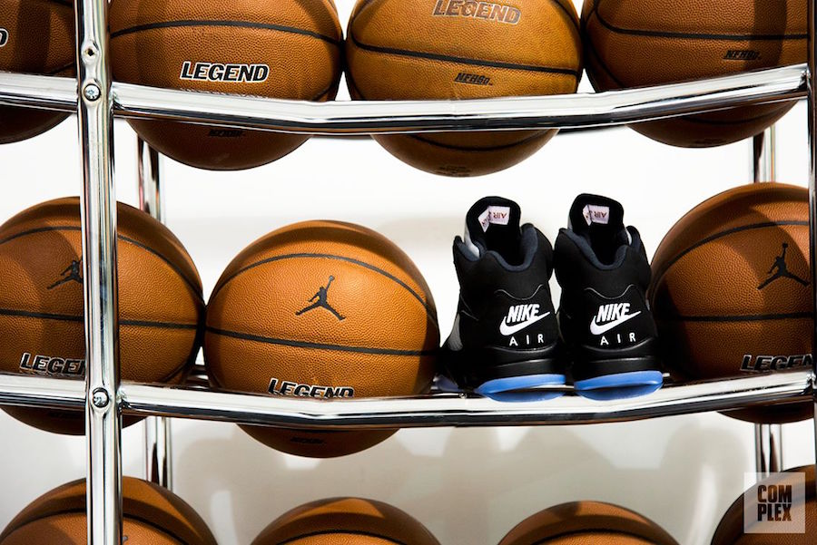

Air Jordan V

© 1990
在乔丹系列早期的作品中，乔丹5代被认为是外形最美观的一款，流畅的鞋型，高帮和从鞋底延伸出的放射性弧线再加上后帮上的23号造就了乔丹5代不同寻常的外表。
与外形相应，此款鞋的内在科技含量也有了较大的提高。NIKE为了推展轻量化的运动鞋，在鞋侧边采用网状布面取代皮面。另外亦在前脚掌弯曲凹槽中首度加入气垫，增加其弯曲性。另外，NIKE增加了中底的厚度，外底采用了半透明的缓震橡胶，增大了抓地效果。鞋面上仍然沿用了一部分网面设计，位置比乔丹4代更靠近鞋底，材料也更加坚固，减少了对侧面支撑的影响。此双外形抢眼的高科技运动鞋，成为连续四年取得得分王头衔的乔丹的强力支柱。
乔丹5代再次掀起了乔丹鞋的购买高潮，绝大多数地区的球迷在发售前头一天的晚上就排起长队。乔丹5代不仅在美国和加拿大等北美地区引起了强烈的反响，在亚洲的日本，韩国和菲律宾等地也产生了轰动，成为乔丹迷们收藏的精品。 乔丹5代在鞋底采用了透明橡胶素材，也是电影《回到未来2》中的未来鞋所采用的材质，他可以发挥高度抓地力。